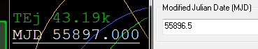

IMFD Part2 Surface Launchを使った打ち上げ
打ち上げ日に移動する
タイムワープかシナリオエディタを使って、TEjの半日前（0.5日前）に移動する。

複数のIMFDでデータを共有する
左のMFDでIMFD(Target Intercept)を開いたまま、右のMFDでもIMFDを開く。
Program MenuでPG(OpMode UnShared)をクリック。
0と入力してEnterキーを押す。
Program Menuの右上にはIDが表示されている。
この番号を入力することで、複数のMFDで同じデータを共有することができる。※
この例では、左のMFDがID-0、右がID-1となっている。
※TransXでは最初からすべてのMFDで同じデータが共有されているので、このような操作は必要ない
Surface Launch
右のIMFDのProgram Menuから、左下のSurface Launchを選択する。
パーキング軌道を設定する
PrvorNxtでAlt（パーキング軌道の高度）を選択してSetをクリック。
200kと入力してEnterキーを押す。
打ち上げ方位とタイミング
ここで見るべき数字は以下の通り。※
※BLLとHedの関係については下記を参照
今すぐ打ち上げたい場合は、一番上のHed(Heading)の方角に向かって飛ぶ。
効率よく打ち上げたい場合は、Timeがゼロに近づくのを待ってから、そのすぐ上のHedの方角に向かって飛ぶ。
時間が経つにつれて、上のHedの数字は下のHedの数字に近づいていく。
今回の例では、Timeが300秒以下になってから、方位090（真東）に向かって打ち上げる。
打ち上げ
機体が090（真東）を向いたら、左右に針路を調整しつつ高度を上げる。
EIn（Ejection Inclination=軌道傾斜角のずれ）がゼロになるようにする。
軌道傾斜角のずれが大きすぎるときは、下にBad Planeの警告が出るようになっている。
PRJをクリックして、軌道の表示をSelf（自機を基準）にする。
ApAが200kmを超えたら、いったんエンジンを止める。
Apまで待ってから、通常の手順で円軌道に投入する。
BLL (Best Latitude of Launch)
地球は自転しているため、地上の物体はすべて西から東に移動している。
緯度が低くなるにつれてこの速度は上がり、赤道直下でもっとも高速になる。
宇宙船を真東に向かって打ち上げると、この速度を利用することができる。
しかし惑星間飛行においては、低緯度地域から真東へ向かって打ち上げると、遷移軌道と軌道面を合わせられないことがある。
したがって、
- できるだけ赤道に近い（緯度が低い）
- タイミングが合えば真東に打ち上げることができる
この2つの条件を満たす緯度が、最適な打ち上げ緯度(Best Latitude of Launch)になる。
今回のミッションでは、BLLは20.519度。
赤道直下からだと、一番いいタイミングでも方位110.51に向かって打ち上げねばならず※、真東（方位090）からは大きくずれている。
※赤道直下が出発点の場合。BLLは同じだが、Hedが110.51になっている
このような場合、赤道直下よりも、KSC（北緯28度）や種子島（北緯31度）のほうが打ち上げの効率がよいということになる。